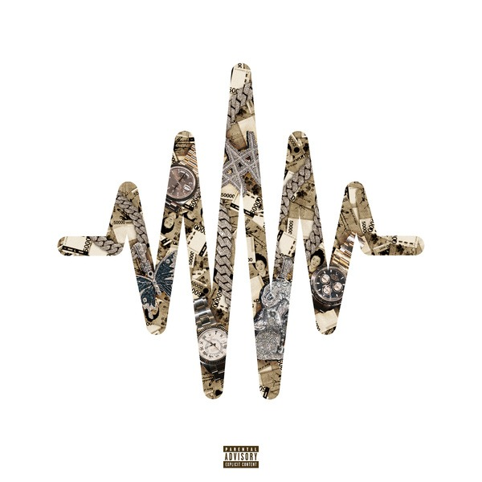

사랑 애 (愛) by homi, cropped and converted to mp3.
HTML (HyperText Markup Language) is the most basic building block of the Web.
It defines the meaning and structure of web content.
Other technologies besides HTML are generally used to describe
a web page's appearance/presentation (CSS) or functionality/behavior (JavaScript).

넌 몰라
넌 남자를 몰라
넌 사랑도 몰라
널 보는 날 왜 몰라
그냥 같이 죽자
하나 안보여 내 눈 앞
쉴 수 있게 해줘 숨만
너만 있는다면 필요 없어 싹 다
너가 그만하라던 그 싸움 이제 안하지
소주 글라스에 먹지 말라해 안먹지
돈으로 해결하지 말라해 안하지
뭘 더 원해 난 널 위해서 다 바꾸지
딴년들이 날 좋아해도 난 너밖에
도대체 왜 넌 이걸 모르지 babe
널 지킬 남자는 나밖에는 없는데
도대체 왜 넌 이걸 모르지 babe
나 천번은 죽는데도 딱히 무서울것도 없었던 난데
너를 이따위 꼴 세상에 혼자는 못두겠네
내가 죽는게 괜찮다면 해도 돼 못 본체
무적이 된 줄 알았어 난 근데 너가 생겼네
내가 흘려도 피
있어줘 나랑 같이
너가 없이는 내 삶은 날수가 없으니 끝이
잠깐만 줄래?
내가 가지려던 모든걸 네게 줄게
힘든 일 한다고 까불지 마 기집애
나를 사랑한 여자는 많았어도
처음이야 내가 많이 사랑한
등신 같은 놈을 만나 고생길이었나봐
믿어줄래 Your my life
너가 되줘야만해 내 자식들의
혼낼줄도 모르는 그런 어머니
나는 너가 가진 전부가 될테니
왜 몰라줘 다하고 있어 죽을힘
넌 몰라
넌 남자를 몰라
넌 사랑도 몰라
널 보는 날 왜 몰라
그냥 같이 죽자
하나 안보여 내 눈 앞
쉴 수 있게 해줘 숨만
너만 있는다면 필요 없어 싹 다